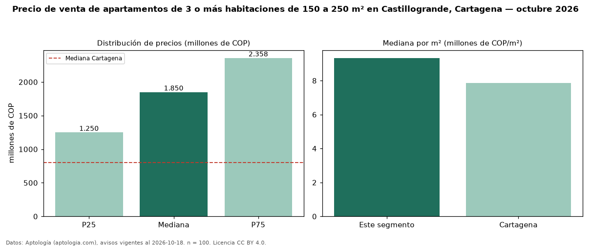

Precio de venta de apartamentos de 3 o más habitaciones de 150 a 250 m² en Castillogrande, Cartagena — octubre 2026
En Castillogrande, Cartagena, la mediana de precio de venta de apartamentos de 3 o más habitaciones de 150 a 250 m² es COP 1,85 mil millones, según 100 avisos vigentes. Prácticamente coincide con la mediana de los apartamentos de 3 o más habitaciones en venta de Castillogrande (COP 1,80 mil millones, n = 217); este segmento reúne el 46 % de esos avisos. Por metro cuadrado, la mediana es COP 9,33 millones/m² (n = 91), 1 % por encima de los apartamentos de 3 o más habitaciones en venta de Castillogrande (COP 9,25 millones/m²). El área mediana anunciada es 190 m². La administración mediana declarada es COP 1,60 millones al mes (n = 83). La mitad central de los avisos va de COP 1,25 mil millones a COP 2,36 mil millones (razón 1,9), una dispersión moderada. El estrato más frecuente es 6 (90 % de los avisos con estrato). La mediana de todos los apartamentos en venta de Cartagena es COP 800 millones (+131 % de diferencia). Datos: Aptología (aptologia.com), CC BY 4.0 — https://www.aptologia.com/venta/cartagena/castillogrande. Archivos: PDF, CSV con las cifras y gráfica PNG.

| Avisos únicos | 100 |
|---|---|
| Percentil 25 | COP 1.250.000.000 |
| Mediana | COP 1.850.000.000 |
| Percentil 75 | COP 2.357.500.000 |
| Mediana por m² | COP 9.333.333 |
Fuente: avisos vigentes de portales inmobiliarios recopilados por Aptología, deduplicados (mínimo 30 avisos únicos por celda). Precios pedidos, no cerrados. Fecha: 2026-10-18.